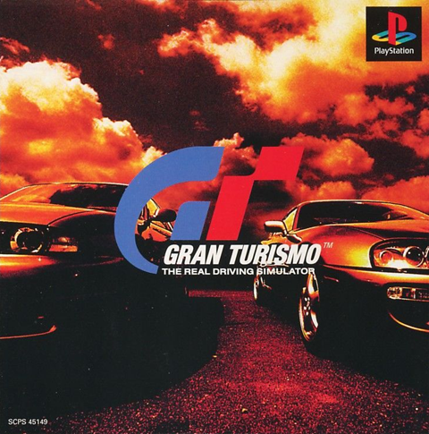
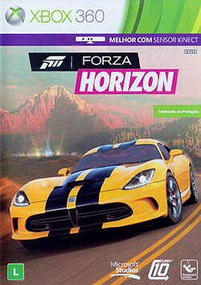

A Evolução dos Games e Simuladores Automotivos
Do Arcade à Telemetria Real: Como as franquias icônicas moldaram a cultura automotiva digital.
1. As Franquias que Definiram Gerações
A indústria dos videogames desempenhou um papel fundamental na formação de novos entusiastas automotivos. A transição dos gráficos tridimensionais primitivos para simulações de física de alta precisão foi liderada por três pilares do entretenimento digital, cada um abordando a cultura automobilística sob uma perspectiva única:
1.1. Need for Speed: A Cultura de Rua, Tuning e Velocidade Arcade
Estreada em 1994, a franquia Need for Speed revolucionou ao levar os jogadores para o banco do motorista dos carros mais cobiçados do mundo. No entanto, foi no início dos anos 2000 que a saga atingiu seu auge cultural com a duologia Underground e o lendário Most Wanted (2005).
Ao abraçar a cultura das corridas clandestinas noturnas, a franquia introduziu um sistema profundo de personalização mecânica e estética — permitindo modificar desde para-choques, aerofólios e óxido nitroso (NOS) até o ajuste de suspensão. Aliando perseguições policiais intensas a trilhas sonoras marcantes de rock e hip-hop, Need for Speed tornou-se o principal portal de entrada dos jovens para o universo da modificação automotiva.

1.2. Gran Turismo: "The Real Driving Simulator"
Idealizado pelo visionário designer e piloto Kazunori Yamauchi e lançado em 1997 para o PlayStation, Gran Turismo estabeleceu o padrão de ouro para a simulação automotiva em consoles. O jogo introduziu um motor de física que calculava transferência de peso, atrito de pneus, centro de gravidade e relações de marcha em tempo real.
Mais do que um jogo, a franquia tornou-se uma enciclopédia interativa. Os jogadores começam com carros populares usados de baixa cilindrada e, através da conquista de licenças de pilotagem (*tirar carteira*) e vitórias em campeonatos, progridem para lendas do automobilismo como os protótipos de Le Mans e supercarros de Ferrari e Lamborghini. O realismo do jogo foi tão revolucionário que deu origem ao projeto GT Academy, transformando jogadores virtuais em pilotos profissionais de corridas reais.

1.3. Franquia Forza: O Equilíbrio Entre Motorsport e Horizon
Lançada pela Microsoft em 2005 para competir no segmento de simulação, a franquia Forza dividiu-se em duas ramificações complementares que redefiniram o gênero:
- Forza Motorsport: Voltado para a precisão técnica em circuitos fechados do mundo real, com foco em telemetria avançada, desgaste térmico dos pneus, simulação de combustível e calibração fina de suspensão.
- Forza Horizon: Focado na celebração da cultura automotiva em um vasto festival de mundo aberto. Combina física acessível com cenários deslumbrantes, troca de estações do ano dinâmicas e liberdade total para explorar estradas a bordo de ícones da Ford, Muscle Cars e exóticos modernos.

2. Glossário Técnico do Automobilismo Virtual (Simracing)
Confira os principais termos técnicos presentes na arquitetura dos jogos modernos:
- Force Feedback (FFB)
- Tecnologia que envia forças mecânicas reais para o volante do jogador com base na física e na telemetria transmitida pelo jogo.
- Telemetry (Telemetria)
- Coleta contínua de dados (pressão de freio, temperatura de pneus, ângulo de esterço) para análise e otimização da pilotagem.
- Ray Tracing
- Algoritmo de renderização gráfica que simula o comportamento físico dos raios de luz, gerando reflexos em tempo real na pintura e nas superfícies dos veículos.